Protagonista da série, Eren é um jovem impactado pelos eventos que viu acontecerem na invasão dos titãs. Movido pela raiva, seu maior objetivo é matar os titãs – todos eles. Porém, enquanto trilha esse caminho, Eren descobre segredos que sequer poderia imaginar, e é munido de poderes e responsabilidades que humano nenhum deveria possuir.
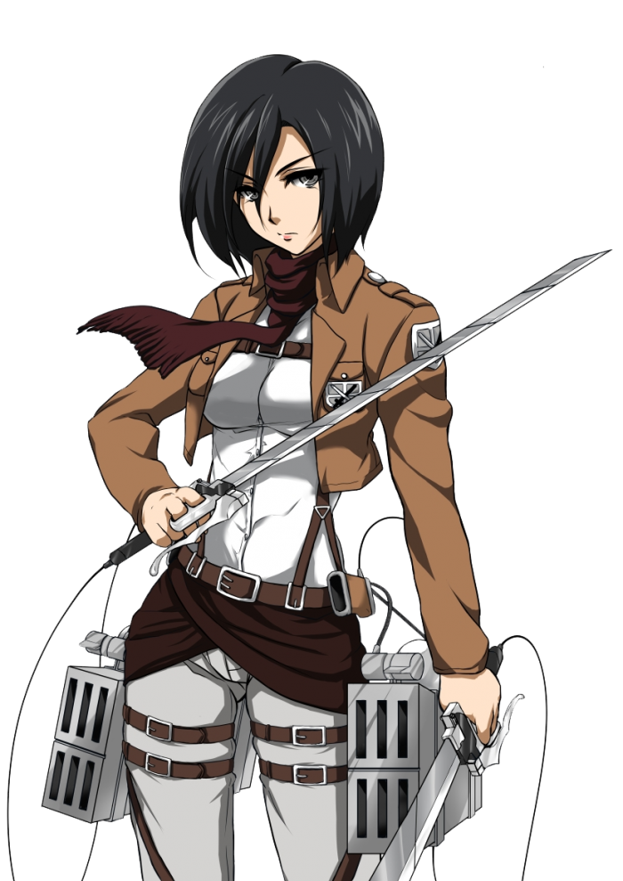
Mikasa Ackerman
Mikasa é uma exímia e disciplinada aluna, com uma forte conexão à Eren. Vivenciou sua infância junto ao protagonista, e juntou-se ao regime militar com ele. A determinação e impressionante força de Mikasa são suas qualidades mais importantes, embora há muito sobre o mundo e ela mesma que ela sequer imagina descobrir.
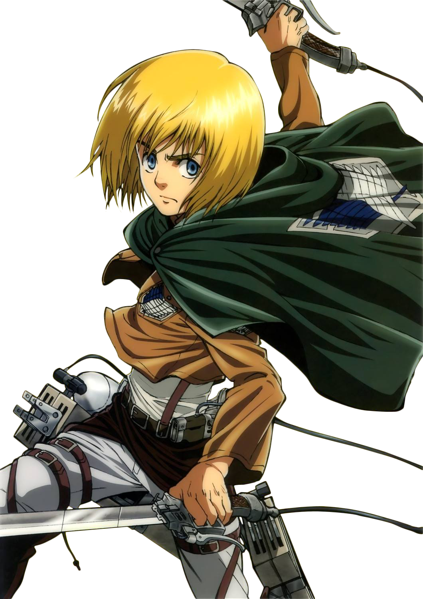
Armin Arlert
Melhor amigo de Eren e Mikasa desde a infância, Armin é um garoto de pensamento extremamente tático e lógico, com grandes sonhos em sua vida. Seu amadurecimento é fortemente impactado pelos eventos que o cercam: difíceis escolhas e enormes responsabilidades.
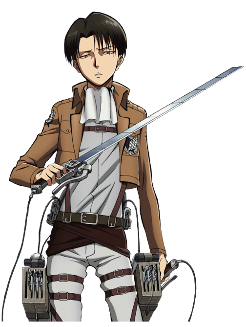
Levi
Levi é um mistério. Assim como Mikasa, possui imensa força, e é um gênio militar. Levi é capitão de esquadrão no Reconhecimento, a divisão militar que lida com titãs mais de perto. Embora escolha inibir suas emoções, é evidente que se importa com seus companheiros e subordinados. O enigma de seu trágico passado é revelado ao longo da série e seus spin-offs.
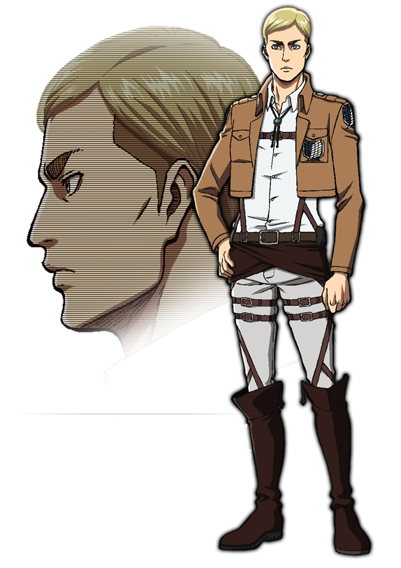
Erwin Smith
Comandante do Reconhecimento, Erwin é um personagem bastante complexo. Sério, calculista e planejador, Erwin funciona como o cérebro do grupo. Atrás dessa fachada, é claro, há um homem com muitos sonhos. Alguns deles, inclusive, outros poderiam caracterizar como impossíveis…
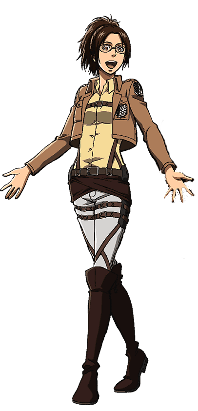
Hange Zoë
Hange é uma enérgica cientista curiosa sobre como os titãs funcionam. Lider de pelotão no Reconhecimento, Hange possui a responsabilidade de pesquisa e testes sobre a biologia dos titãs. Embora esse seja um grande fardo, Hange não faz ideia das responsabilidades que hão de cair em suas mãos.
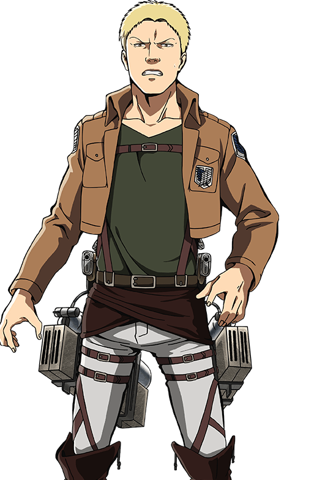
Reiner Braun
Reiner é um jovem muito forte, colega de Eren, Mikasa e Armin em seus treinamentos militares. Seu comportamento inicialmente irritadiço, aliado à sua fenomenal força para a idade, o fazem um dos melhores alunos da turma. Mas há algo a mais em Reiner.
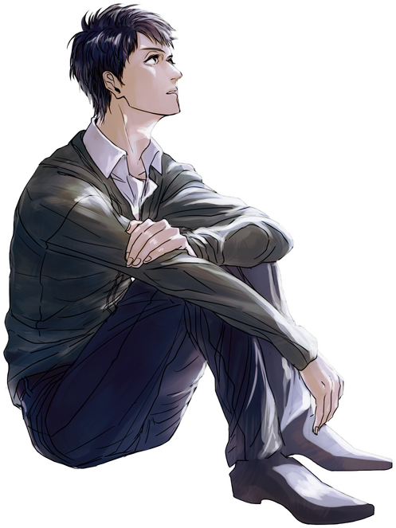
Bertholdt Roover
Bertholdt, o melhor amigo de Reiner, é um sujeito interessante. Quieto e introvertido, Bertholdt limita-se a fazer os treinamentos impostos e a socializar com o grupo. Mas há uma fraqueza em específico em Bertholdt, e atrás das mais quietas mentes, repousam os mais inacreditáveis segredos.
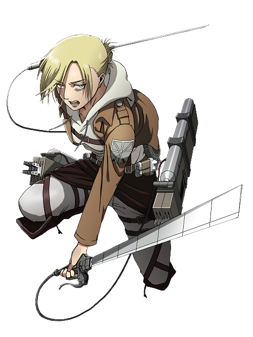
Annie Leonhart
Annie está sempre de mau humor. Essa jovem possui imensa força física e conhecimento de artes marciais, e seu maior passatempo é criar cenários de luta com seus amigos companheiros de treinamento. Annie possui o sonho de entrar na Polícia Militar, ranque de maior prestígio (e salário) da estrutura militar das muralhas. Porém, uma série de infelizes eventos mudam o curso das coisas.
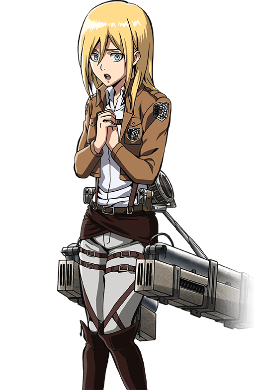
Christa Reiss
Christa é uma menina de aparência angelical, mas de passado coberto em mistério. Suas histórias sobre a infância frequentemente entram em colisão de coerência. Christa é simpática, inteligente e busca nos treinamentos encontrar forças para definir sua identidade. O que ela mantém escondido do resto pode fazer a terra estremecer.
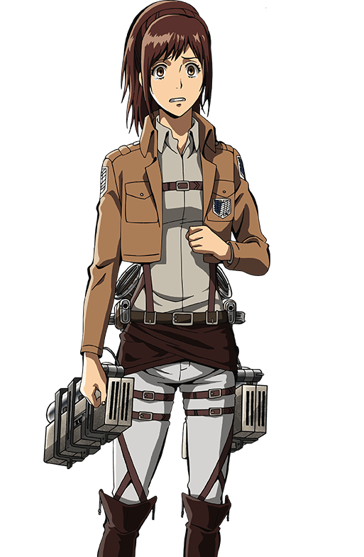
Sasha Braus
A comilona do grupo, Sasha é uma garota cuja infância foi marcada por uma vivência rural que dependia da caça. A menina fala com educação considerada até mesmo exagerada, sendo querida por todos do grupo. Suas experiências de infância a permitem ter coragem e intuição significativas para lidar com o perigo dos titãs, mas nunca pode-se deixar a guarda baixa.
Ymir
Essa jovem garota recebeu seu nome a partir de uma antiga lenda do mundo onde se passa a trama, por motivos mais importantes do que se imagina. Ymir faz suas próprias regras, obedecendo apenas ao que lhe convém. Apesar de sua personalidade presunçosa, a garota se dá muito bem com o grupo, especialmente com Christa.
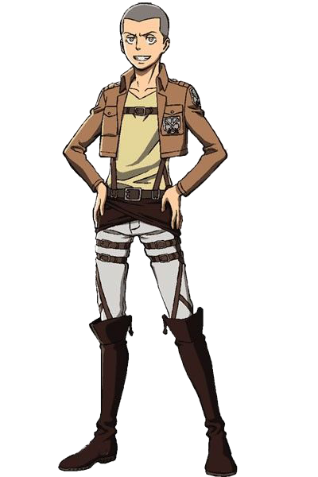
Connie Springer
Connie Springer é um jovem garoto vindo da vila de Ragako. De pavio curto, Connie é geralmente uma pessoa bastante tranquila e amigável. A vida não é boa com Connie, e ele acaba descobrindo coisas que nunca deveriam ter acontecido.